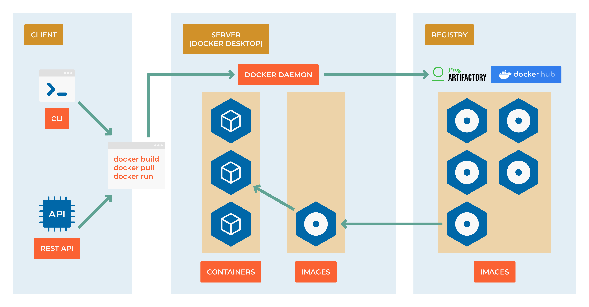

8.4 Creating Custom Images
{kind=link}

From Consumer to Creator
So far, you’ve been running containers from images created by others. Now comes the transformative moment: learning to build your own custom images. This is where containers become truly powerful - you can package your applications exactly how you want them, ensuring consistency across all environments.
Think of this as learning to cook rather than just ordering takeout. Once you master Dockerfiles, you control every ingredient in your application’s environment.
Learning Objectives
By the end of this section, you will:
Write production-ready Dockerfiles following security and efficiency best practices
Understand Docker’s layered filesystem and how to optimize build performance
Build images for different types of applications (web apps, APIs, databases)
Implement multi-stage builds to create smaller, more secure images
Debug build failures and optimize Docker image sizes
Apply security hardening techniques to your container images
Prerequisites: Understanding of basic container operations and command-line familiarity
Dockerfile Fundamentals
What is a Dockerfile?
A Dockerfile is a text file containing a series of instructions that Docker uses to automatically build an image. It’s like a recipe that specifies:
The base operating system or runtime
Application dependencies to install
Files to copy into the image
Environment variables to set
Commands to run when the container starts
The Anatomy of a Dockerfile:
# Syntax: FROM <image>:<tag>
FROM python:3.11-slim
# Syntax: LABEL <key>=<value>
LABEL maintainer="yourname@company.com"
LABEL version="1.0"
# Syntax: WORKDIR <path>
WORKDIR /app
# Syntax: COPY <src> <dest>
COPY requirements.txt .
# Syntax: RUN <command>
RUN pip install --no-cache-dir -r requirements.txt
# Syntax: COPY <src> <dest>
COPY . .
# Syntax: EXPOSE <port>
EXPOSE 8000
# Syntax: CMD ["executable", "param1", "param2"]
CMD ["python", "app.py"]
Your First Custom Image
Building a Python Web Application
Let’s create a complete web application image step by step:
Step 1: Create the Application
# app.py - Simple Flask web application
from flask import Flask, jsonify
import os
import platform
app = Flask(__name__)
@app.route('/')
def home():
return jsonify({
'message': 'Hello from containerized Flask!',
'hostname': platform.node(),
'python_version': platform.python_version(),
'environment': os.environ.get('APP_ENV', 'development')
})
@app.route('/health')
def health():
return jsonify({'status': 'healthy'}), 200
if __name__ == '__main__':
app.run(host='0.0.0.0', port=8000, debug=False)
Step 2: Define Dependencies
# requirements.txt
Flask==2.3.3
gunicorn==21.2.0
Step 3: Write the Dockerfile
# Use Python 3.11 on slim Debian base (smaller than full Python image)
FROM python:3.11-slim
# Add metadata to the image
LABEL maintainer="devops-team@company.com"
LABEL description="Flask web application demo"
LABEL version="1.0.0"
# Create a non-root user for security
RUN groupadd -r appuser && useradd -r -g appuser appuser
# Set working directory
WORKDIR /app
# Copy requirements first (for better caching)
COPY requirements.txt .
# Install Python dependencies
RUN pip install --no-cache-dir --upgrade pip && \
pip install --no-cache-dir -r requirements.txt
# Copy application code
COPY app.py .
# Change ownership to non-root user
RUN chown -R appuser:appuser /app
USER appuser
# Expose port (documentation only, doesn't actually publish)
EXPOSE 8000
# Health check to monitor container status
HEALTHCHECK --interval=30s --timeout=3s --start-period=5s --retries=3 \
CMD curl -f http://localhost:8000/health || exit 1
# Set environment variables
ENV APP_ENV=production
ENV FLASK_APP=app.py
# Use exec form for proper signal handling
CMD ["python", "app.py"]
Step 4: Build and Test
# Build the image
docker build -t my-flask-app:1.0 .
# Run the container
docker run -d -p 8000:8000 --name flask-demo my-flask-app:1.0
# Test the application
curl http://localhost:8000
curl http://localhost:8000/health
# Check container health
docker ps
docker logs flask-demo
Dockerfile Instructions Deep Dive
Essential Instructions
FROM - Choose Your Foundation
# Official language runtimes
FROM python:3.11-slim # Python with minimal OS
FROM node:18-alpine # Node.js on Alpine Linux (tiny)
FROM openjdk:17-jre-slim # Java runtime only
# Operating systems
FROM ubuntu:22.04 # Full Ubuntu system
FROM alpine:3.18 # Minimal Linux (5MB)
FROM scratch # Empty image (for static binaries)
# Application-specific bases
FROM nginx:alpine # Web server ready
FROM postgres:15 # Database ready
RUN - Execute Commands
# Single command
RUN apt-get update
# Multiple commands (creates multiple layers)
RUN apt-get update
RUN apt-get install -y curl
RUN apt-get clean
# Better: Chain commands (single layer)
RUN apt-get update && \
apt-get install -y curl && \
apt-get clean && \
rm -rf /var/lib/apt/lists/*
# Use here documents for complex scripts
RUN <<EOF
apt-get update
apt-get install -y python3 python3-pip
pip3 install --upgrade pip
rm -rf /var/lib/apt/lists/*
EOF
COPY vs ADD
# COPY: Simple file copying (preferred)
COPY app.py /app/
COPY requirements.txt /app/
COPY . /app/ # Copy entire context
# ADD: COPY plus extra features (use sparingly)
ADD app.tar.gz /app/ # Automatically extracts archives
ADD https://example.com/file.txt /app/ # Downloads URLs
# Best practice: Use COPY unless you need ADD's special features
Environment and Configuration
# Set environment variables
ENV NODE_ENV=production
ENV API_URL=https://api.example.com
ENV DEBUG=false
# Set build-time variables
ARG VERSION=latest
ARG BUILD_DATE
# Use ARG in RUN commands
RUN echo "Building version $VERSION on $BUILD_DATE"
# Working directory
WORKDIR /app # Creates directory if it doesn't exist
WORKDIR /app/src # Can be called multiple times
User Security
# Create and use non-root user
RUN groupadd -r myapp && useradd -r -g myapp myapp
USER myapp
# Or use numeric UID (works across all systems)
RUN groupadd -r myapp && useradd -r -g myapp -u 1001 myapp
USER 1001:1001
Multi-Stage Builds
The Problem with Single-Stage Builds
Traditional Dockerfiles include build tools in the final image:
# Problematic: Final image includes build tools (larger, less secure)
FROM node:18
WORKDIR /app
COPY package*.json ./
RUN npm install # Includes devDependencies
COPY . .
RUN npm run build # Build tools remain in image
CMD ["npm", "start"]
The Multi-Stage Solution
# Stage 1: Build environment
FROM node:18 AS builder
WORKDIR /app
COPY package*.json ./
RUN npm ci --only=production
COPY . .
RUN npm run build
# Stage 2: Production runtime
FROM node:18-alpine AS production
RUN addgroup -g 1001 -S nodejs && \
adduser -S nextjs -u 1001
WORKDIR /app
# Copy only production files from builder stage
COPY --from=builder --chown=nextjs:nodejs /app/dist ./dist
COPY --from=builder --chown=nextjs:nodejs /app/node_modules ./node_modules
COPY --from=builder --chown=nextjs:nodejs /app/package.json ./package.json
USER nextjs
EXPOSE 3000
CMD ["npm", "start"]
Real-World Multi-Stage Example: Go Application
# Build stage
FROM golang:1.21-alpine AS builder
WORKDIR /app
# Copy go mod files
COPY go.mod go.sum ./
RUN go mod download
# Copy source and build
COPY . .
RUN CGO_ENABLED=0 GOOS=linux go build -a -installsuffix cgo -o main .
# Final stage - minimal image
FROM alpine:3.18
RUN apk --no-cache add ca-certificates
WORKDIR /root/
# Copy only the binary
COPY --from=builder /app/main .
CMD ["./main"]
Benefits of Multi-Stage Builds:
Smaller images: Final image only contains runtime dependencies
Better security: No build tools in production image
Faster deployments: Smaller images transfer faster
Cost savings: Less storage and bandwidth usage
Optimization Techniques
Layer Caching Strategies
Docker caches layers to speed up builds. Optimize by ordering instructions from least to most frequently changed:
# GOOD: Stable layers first
FROM python:3.11-slim
# Install system dependencies (rarely change)
RUN apt-get update && apt-get install -y \
curl \
&& rm -rf /var/lib/apt/lists/*
# Copy requirements file (changes occasionally)
COPY requirements.txt .
# Install Python packages (changes occasionally)
RUN pip install -r requirements.txt
# Copy source code (changes frequently)
COPY . .
# BAD: Frequently changing layers first
FROM python:3.11-slim
COPY . . # Code changes invalidate all subsequent layers
RUN apt-get update && ... # Reinstalls every time
RUN pip install -r requirements.txt # Reinstalls every time
Minimize Image Size
# Use Alpine Linux base images
FROM python:3.11-alpine
# Clean package caches in the same RUN command
RUN apk add --no-cache \
build-base \
&& pip install numpy \
&& apk del build-base # Remove build dependencies after use
# Use .dockerignore file to exclude unnecessary files
# .dockerignore:
# node_modules
# .git
# README.md
# .env.example
# Remove package manager caches
RUN apt-get update && apt-get install -y \
package1 package2 \
&& apt-get clean \
&& rm -rf /var/lib/apt/lists/*
Security Best Practices
# Use specific tags, not 'latest'
FROM python:3.11.5-slim
# Scan base images for vulnerabilities
# Use tools like trivy: trivy image python:3.11.5-slim
# Run as non-root user
RUN groupadd -r app && useradd -r -g app app
USER app
# Don't store secrets in images
# BAD:
# ENV API_KEY=secret123
# GOOD: Use runtime environment variables or secrets management
# Use COPY instead of ADD when possible
COPY requirements.txt . # Explicit and predictable
# Set read-only root filesystem
# docker run --read-only -v /tmp:/tmp:rw my-app
Advanced Dockerfile Patterns
Dynamic Build Arguments
ARG NODE_VERSION=18
FROM node:${NODE_VERSION}-alpine
ARG BUILD_DATE
ARG GIT_COMMIT
LABEL build_date=$BUILD_DATE
LABEL git_commit=$GIT_COMMIT
# Use during build:
# docker build --build-arg BUILD_DATE=$(date -u +'%Y-%m-%dT%H:%M:%SZ') \
# --build-arg GIT_COMMIT=$(git rev-parse HEAD) \
# -t my-app .
Health Checks
# Basic HTTP health check
HEALTHCHECK --interval=30s --timeout=3s --start-period=5s --retries=3 \
CMD curl -f http://localhost:8000/health || exit 1
# Custom health check script
COPY healthcheck.sh /usr/local/bin/
RUN chmod +x /usr/local/bin/healthcheck.sh
HEALTHCHECK --interval=30s --timeout=10s --start-period=5s --retries=3 \
CMD healthcheck.sh
Signal Handling
# GOOD: Use exec form for proper signal handling
CMD ["python", "app.py"]
# BAD: Shell form doesn't handle signals properly
CMD python app.py
# For shell scripts, use exec:
#!/bin/bash
# setup.sh
echo "Starting application..."
exec python app.py
Debugging Build Issues
Common Build Failures
Permission Issues:
# Problem: Files copied as root, but running as user
COPY app.py /app/
USER 1001
# Solution: Change ownership
COPY --chown=1001:1001 app.py /app/
Network Issues During Build:
# Problem: Network timeouts during package installation
# Solution: Add retries and use different mirrors
RUN for i in 1 2 3; do \
apt-get update && break || sleep 15; \
done
Debugging Techniques:
# Build with no cache to see all steps
docker build --no-cache -t my-app .
# Build and stop at specific stage for inspection
docker build --target builder -t debug-build .
docker run -it debug-build /bin/bash
# Check build history and layer sizes
docker history my-app
docker images --format "table {{.Repository}}\t{{.Tag}}\t{{.Size}}"
Production Dockerfile Template
Here’s a production-ready template for a Python web application:
# syntax=docker/dockerfile:1.4
# Build stage
FROM python:3.11-slim as builder
# Install system dependencies for building
RUN apt-get update && apt-get install -y \
build-essential \
curl \
&& rm -rf /var/lib/apt/lists/*
# Create virtual environment
RUN python -m venv /opt/venv
ENV PATH="/opt/venv/bin:$PATH"
# Copy and install Python dependencies
COPY requirements.txt .
RUN pip install --upgrade pip && \
pip install --no-cache-dir -r requirements.txt
# Production stage
FROM python:3.11-slim as production
# Create non-root user
RUN groupadd -r appuser && \
useradd -r -g appuser -u 1001 appuser
# Install runtime dependencies only
RUN apt-get update && apt-get install -y \
curl \
&& rm -rf /var/lib/apt/lists/*
# Copy virtual environment from builder stage
COPY --from=builder /opt/venv /opt/venv
ENV PATH="/opt/venv/bin:$PATH"
# Set up application directory
WORKDIR /app
COPY --chown=appuser:appuser . .
# Security and runtime configuration
USER appuser
EXPOSE 8000
# Health check
HEALTHCHECK --interval=30s --timeout=3s --start-period=5s --retries=3 \
CMD curl -f http://localhost:8000/health || exit 1
# Use exec form and run as non-root
CMD ["gunicorn", "--bind", "0.0.0.0:8000", "--workers", "4", "app:app"]
Practical Exercises
Exercise 1: Multi-Stage Node.js Build
Create a Dockerfile for a React application with separate build and production stages.
Exercise 2: Database with Custom Configuration
Build a PostgreSQL image with custom configuration and initialization scripts.
Exercise 3: Security Hardening
Take an existing Dockerfile and apply security best practices: non-root user, minimal packages, vulnerability scanning.
What’s Next?
You now understand how to create custom container images that are secure, efficient, and production-ready. In the next section, we’ll explore container orchestration with Docker Compose to manage multi-container applications.
Key takeaways:
Dockerfiles define repeatable, version-controlled environments
Multi-stage builds create smaller, more secure images
Layer caching and optimization techniques speed up builds
Security practices are essential for production images
Health checks and proper signal handling improve reliability
Tip
Pro Tip: Start with working Dockerfiles and iteratively optimize them. Perfect is the enemy of good - a working container is better than a perfect container that doesn’t exist yet.